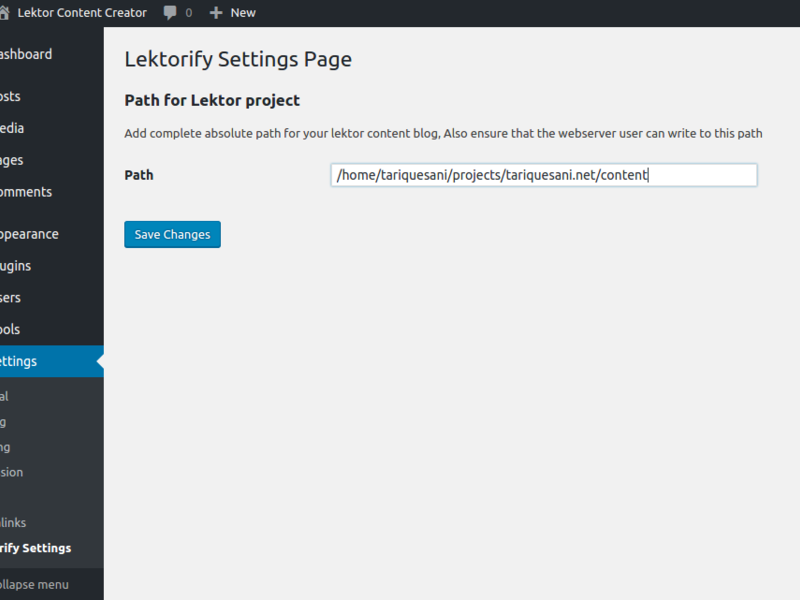

Lektorify is a plugin which ideally should never be needed but it is there for now.

Mar
08
08
Using WordPress as Lektor backend

Aug
19
19
Hello Lektor
Lektor is more of a framework. You can model your own blog posts and render them with the templates you want to use.
Aug
15
15
Bye Bye WordPress
WordPress first became boring and then too expensive for a simple personal website. So I decided to switch to a static site.